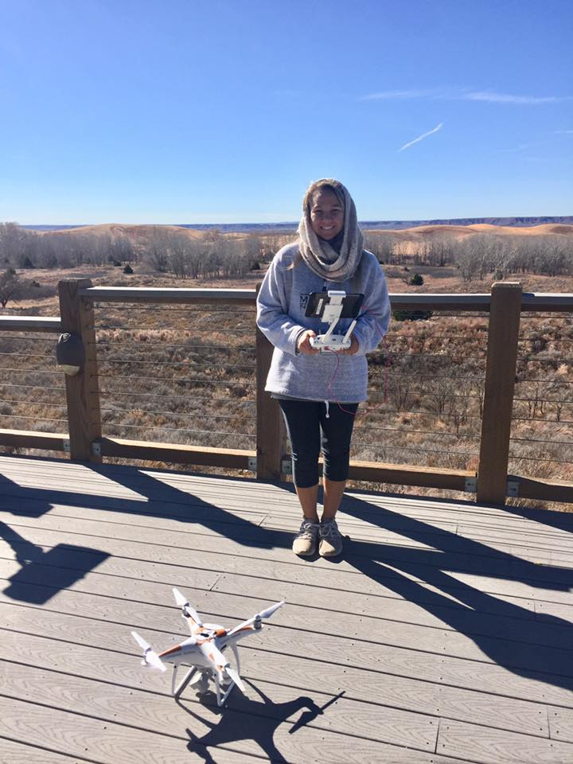

They say a picture is worth a thousand words—but how much data is it worth?
In planetary science, images are more than visuals; they are quantitative records of surface processes. I use orbital imagery, radar data, and geospatial analysis to extract measurable information about planetary surfaces, linking morphology to the physical processes that shape it. My research focuses on how surface features reflect interactions with the planetary boundary layer, from sublimation-driven landforms on Mars to radar backscatter from Titan’s dunes and pressure signatures of dust devils. By combining remote sensing, GIScience, and Earth analogs, I aim to better understand how planetary environments evolve over time.
Dust Devils in Motion
Current Project
Caught an unexpected dust devil in Etosha National Park, Namibia. Personal excursion, October 2025.
I am currently a postdoctoral researcher in Brian Jackson’s research group, where I study dust devils as atmospheric vortices and their role in surface–atmosphere interactions on Mars. This work builds on established frameworks for identifying and characterizing dust devils using their pressure structure and dynamics, with the goal of understanding how boundary layer processes drive dust lifting and surface change.
As part of this research, I also led a field campaign in the Alvord Desert of southeastern Oregon investigating dust devil pressure signatures and dust loading through the deployment of a compact (~100 m) network of meteorological stations, aerosol sensors, and time-lapse cameras for long-term monitoring.
Martian Polar Processes
Previous Project
The Martian polar caps are shaped by the seasonal exchange of carbon dioxide between the surface and atmosphere. Each winter, CO2 condenses onto the poles, forming a layer of frost and ice that sublimates back into the atmosphere during summer. This cycle drives active surface–atmosphere interactions and plays a central role in Mars’ present-day climate.
My research focused on the Martian South Polar Residual Cap, a unique and dynamic reservoir of CO2 ice. Here, sublimation sculpts the surface into expanding depressions known as Swiss Cheese Features. Using high-resolution orbital imagery, I quantified how these features grow over time to constrain rates of mass loss and assess whether the cap is in equilibrium with the atmosphere.
By tracking these changes across multiple spatial and temporal scales, this work provides insight into modern climate variability on Mars and the processes driving polar landscape evolution.

While I can’t get to Mars, I can get to ice. Sólheimajökull Glacier, Iceland. Personal trip, July 2021.
Titan Aeolian Processes
Previous Project

The next best thing to Titan’s dunes. Sossusvlei, Namibia in October 2025 during NASA-funded field work.
Titan hosts vast equatorial dune fields composed of organic sediments, shaped by complex interactions between atmospheric circulation and surface processes. Because Titan’s surface is obscured by a thick haze, radar is the primary tool for observing these landscapes. Data from the Cassini–Huygens mission revealed extensive linear dunes that record long-term wind patterns and sediment transport across the moon’s surface.
My research used radar backscatter to investigate the physical properties of these dunes and what they reveal about Titan’s environment. By applying multiple scattering models and comparing Titan to Earth analogs like the Namib Sand Sea, I test whether observed radar signals can be explained by surface properties alone or require contributions from subsurface structure.
This work showed that Titan’s dunes cannot be fully described using surface-only models, pointing to the importance of volumetric scattering, internal porosity, or compositional layering. These results provide insight into the structure of Titan’s dune materials and improve how we interpret radar observations of planetary surfaces.
Atmospheric Boundary Layer Studies
Previous Project
As part of the NSF-funded CLOUD-MAP project (Collaborative Leading Operational Unmanned Systems Development for Meteorology and Atmospheric Physics), I participated in the 2018 LAPSE-RATE (Lower Atmospheric Process Studies at Elevation – a Remotely-piloted Aircraft Team Experiment) field campaign in collaboration with researchers from Oklahoma State University, the University of Oklahoma, the University of Kentucky, and the University of Nebraska–Lincoln. Our work used sUAS platforms to investigate how atmospheric temperature and humidity vary with land cover and terrain.
Findings from this project were presented at the American Meteorological Society Annual Student GIS Poster Competition in 2019.

A photo and me and the aptly named 'Phantom Pete'. This image was taken during field work in Little Sahara State Park in NW Oklahoma. Summer 2019.